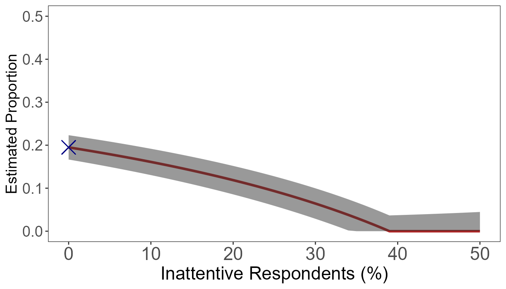

Crosswise questions let respondents answer a sensitive question
without revealing their answer directly. A respondent is shown a
sensitive statement and a second statement whose prevalence is known
(p). They report only whether their answers to the two
statements are the same or different. The crosswise response is
therefore not itself the sensitive-trait indicator.
The design protects privacy, but it also makes inattentive responses
important: respondents who answer at random pull the observed crosswise
proportion toward one half. cWise uses an anchor
crosswise question with known sensitive-item prevalence to estimate
attentiveness and correct that bias.
The package includes simulated data from this design. Y
is the primary crosswise response, A is the anchor
response, and p and p.prime are the known
randomization probabilities.
head(cmdata)
#> Y A weight p p.prime
#> 1 1 1 1.25 0.15 0.15
#> 2 0 0 1.25 0.15 0.15
#> 3 0 0 1.25 0.15 0.15
#> 4 1 0 5.00 0.15 0.15
#> 5 0 1 1.25 0.15 0.15
#> 6 1 1 1.25 0.15 0.15Use bc_est() to obtain both the naive and bias-corrected
prevalence estimates. Here, the anchor makes it possible to estimate the
share of attentive respondents as well.
estimate <- bc_est(Y = Y, A = A, p = 0.15, p.prime = 0.15, data = cmdata)
estimate
#> $Results
#> Estimate Std. Error 95%CI(Low) 95%CI(Up)
#> Naive Crosswise 0.1950 0.0144 0.1667 0.2233
#> Bias-Corrected 0.1054 0.0214 0.0679 0.1529
#>
#> $Stats
#> Attentive Rate Sample Size
#> 0.7729 2000Results contains point estimates, standard errors, and
confidence intervals. Stats reports the estimated
attentive-response rate and the analysis sample size. The bias-corrected
row is usually the estimand of interest when the anchor-question
assumptions are credible.
When no anchor question was fielded, cmBound() shows how
the estimate changes over a plausible range of inattentive-response
rates. The following calculation uses only the observed primary-question
proportion, its randomization probability, and the sample size.

An optional direct-question estimate can be supplied with
dq and N.dq; it is then drawn as a reference
line with its uncertainty interval.
Power-analysis functions are deliberately not evaluated while this
vignette is built: they run nested bootstrap simulations. Start with a
small exploratory run and increase N.sim for a
study-planning analysis.
simulation <- sim_cwdata(
N.sim = 200, sample = 500, pi = 0.10, p = 0.15, p.prime = 0.15,
gamma = 0.80, direct = 0.05
)
simulation$Results
sim_power(
N.sim = 500, sample = 1000, pi.null = 0.05, pi.alt = 0.10,
p = 0.15, p.prime = 0.15, gamma = 0.80, direct = 0.05
)sim_estimates() plots the simulated estimates, while
sim_power_N() compares the package’s standard sample-size
grid. These functions are intended for interactive study planning rather
than a package build.